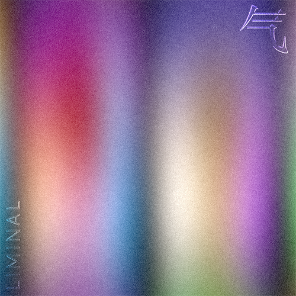

Liminal Magazine / Liminal Aura
AR (2020)
“Can we take a glitch and re-fashion it to suit the mood? Can a glitch be a sign of disaffection, of continued existence, of intimacy?” — Liminal Magazine
Intrigued by the practice of aura photography in New York’s Chinatown, I brainstormed with Liminal Magazine on a way of visualising one’s aura through Augmented Reality for its digital ‘Glitch’ series.
This aura is also known as your Qi. To capture your Qi with this Instagram filter, tap your screen and wait for the colours to appear. Bear in mind that your Qi is always fluctuating given your circumstances and emotions, which will lead to different outcomes at different times.
Concept & AR development / Helena Dong
AR (2020)
“Can we take a glitch and re-fashion it to suit the mood? Can a glitch be a sign of disaffection, of continued existence, of intimacy?” — Liminal Magazine
Intrigued by the practice of aura photography in New York’s Chinatown, I brainstormed with Liminal Magazine on a way of visualising one’s aura through Augmented Reality for its digital ‘Glitch’ series.
This aura is also known as your Qi. To capture your Qi with this Instagram filter, tap your screen and wait for the colours to appear. Bear in mind that your Qi is always fluctuating given your circumstances and emotions, which will lead to different outcomes at different times.
Concept & AR development / Helena Dong
Thumbnail / Promotional art, Helena Dong